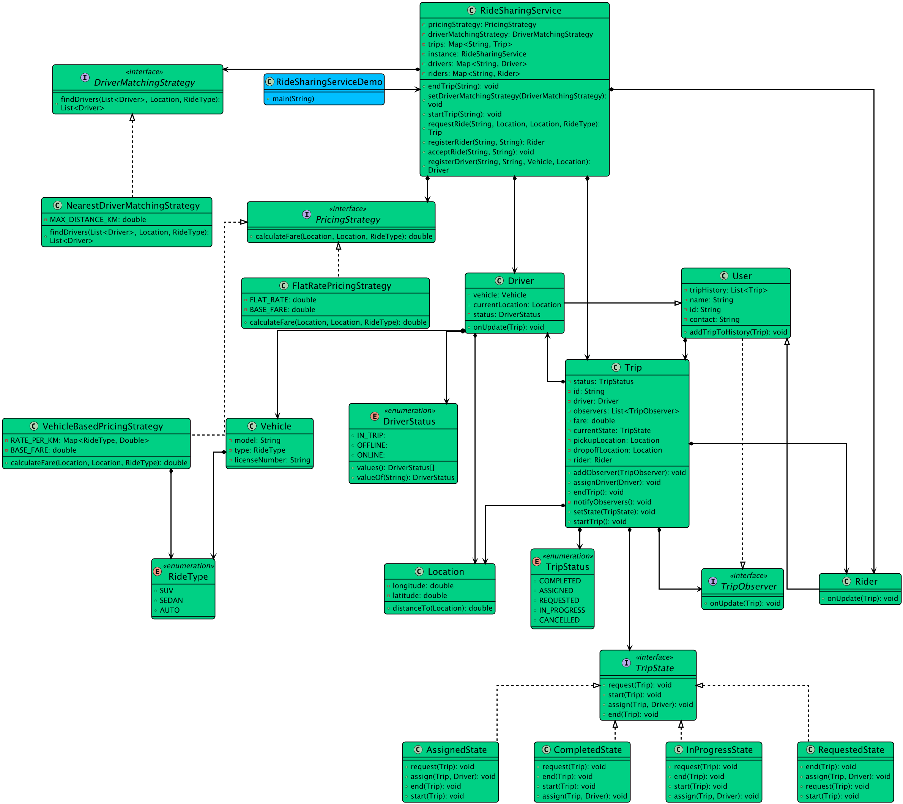

Back to Index
Module: 15 - Interview Problems Part 3Published: 2026-06-12
Designing a Ride Booking App
lldride-bookingstate-patternasync
📌 Designing a Ride Booking App
[!info] Navigation Module: [[15 - Interview Problems Part 3/index|← Interview Problems Part 3 Overview]] Prev: [[15 - Interview Problems Part 3/music-streaming|← Designing a Music Streaming Platform]]
🎯 Step 1: Clarify Requirements
Functional Requirements
- Rides: Rider requests a ride with Pickup/Dropoff locations.
- Matching: System asynchronously finds nearest online driver.
- Driver Workflow: Driver accepts ride → Starts Ride → Completes Ride.
- Payments: Rides can be
PRE_PAYMENT(matched after payment success) orPOST_PAYMENT(matched immediately).
Non-Functional Requirements
- Concurrency: Prevent a driver from being assigned two simultaneous rides.
- State Management: Strict transitions (
REQUESTED→ASSIGNED→ACCEPTED→IN_PROGRESS→COMPLETED).
🧱 Step 2: Identify Core Entities

Ride: Tracks status, estimated fare, Rider ID, Driver ID (nullable until accepted).Driver:ONLINE,OFFLINE,ON_RIDE. Location coordinates.Rider: ID, Name, Contact.RideStateMachine: Central utility dictating allowed status transitions.
⚙️ Step 3: Architecture & Design Patterns
- Strategy Pattern:
DriverMatchingStrategy: Determines how to find drivers (NearestDriverStrategy).PricingStrategy: Calculates fare based on distance and duration.
- Asynchronous Matching: Matching shouldn't block the HTTP request. A thread polls
ONLINEdrivers, notifies one, waits for a timeout, and moves to the next if ignored. - Distributed Locks (Simulated): A driver lock (
driver_lock_{id}) prevents race conditions during assignment.
💻 Step 4: Core Implementation (C++)
cpp
#include <iostream>
#include <string>
#include <vector>
#include <stdexcept>
using namespace std;
enum class RideStatus { REQUESTED, ASSIGNED, ACCEPTED, IN_PROGRESS, COMPLETED, CANCELLED };
enum class DriverStatus { ONLINE, OFFLINE, ON_RIDE };
struct Ride {
string id;
string driverId;
RideStatus status = RideStatus::REQUESTED;
};
struct Driver {
string id;
DriverStatus status = DriverStatus::ONLINE;
};
// 1. State Machine
class RideStateMachine {
public:
static void transition(Ride& ride, RideStatus nextStatus) {
if (ride.status == RideStatus::REQUESTED && nextStatus == RideStatus::ASSIGNED) { ride.status = nextStatus; return; }
if (ride.status == RideStatus::ASSIGNED && nextStatus == RideStatus::ACCEPTED) { ride.status = nextStatus; return; }
if (ride.status == RideStatus::ACCEPTED && nextStatus == RideStatus::IN_PROGRESS) { ride.status = nextStatus; return; }
if (ride.status == RideStatus::IN_PROGRESS && nextStatus == RideStatus::COMPLETED) { ride.status = nextStatus; return; }
throw runtime_error("Invalid Ride Transition");
}
};
// 2. Ride Service
class RideService {
public:
void driverAccept(Ride& ride, Driver& driver) {
// In reality, acquire ride lock & driver lock here
if (ride.status != RideStatus::REQUESTED && ride.status != RideStatus::ASSIGNED) {
throw runtime_error("Ride is no longer available.");
}
if (driver.status != DriverStatus::ONLINE) {
throw runtime_error("Driver is not available.");
}
// Mutation
ride.driverId = driver.id;
RideStateMachine::transition(ride, RideStatus::ASSIGNED);
RideStateMachine::transition(ride, RideStatus::ACCEPTED);
driver.status = DriverStatus::ON_RIDE;
cout << "Driver " << driver.id << " accepted ride " << ride.id << endl;
}
void completeRide(Ride& ride, Driver& driver) {
RideStateMachine::transition(ride, RideStatus::COMPLETED);
driver.status = DriverStatus::ONLINE; // Free the driver
cout << "Ride " << ride.id << " completed. Driver " << driver.id << " is now ONLINE." << endl;
}
};
int main() {
Ride r1 = {"RIDE_123", "", RideStatus::REQUESTED};
Driver d1 = {"DRV_99", DriverStatus::ONLINE};
RideService svc;
try {
svc.driverAccept(r1, d1);
// Simulating the ride
RideStateMachine::transition(r1, RideStatus::IN_PROGRESS);
svc.completeRide(r1, d1);
} catch(const exception& e) {
cout << "Error: " << e.what() << endl;
}
return 0;
}
🚨 Edge Cases Handled
- Double Assignment: By placing an application-level mutex over the
Driverobject, the system ensures two simultaneous rides cannot lock the same driver concurrently. - Callback Wait States: Rides set to
PRE_PAYMENTsit in aPENDINGpayment status. The async matcher ignores them until thePaymentCallbackServicemoves them toREQUESTED.